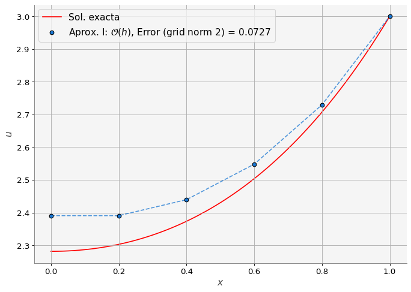
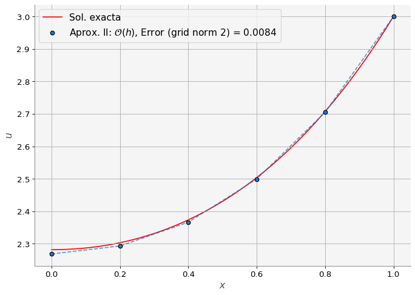
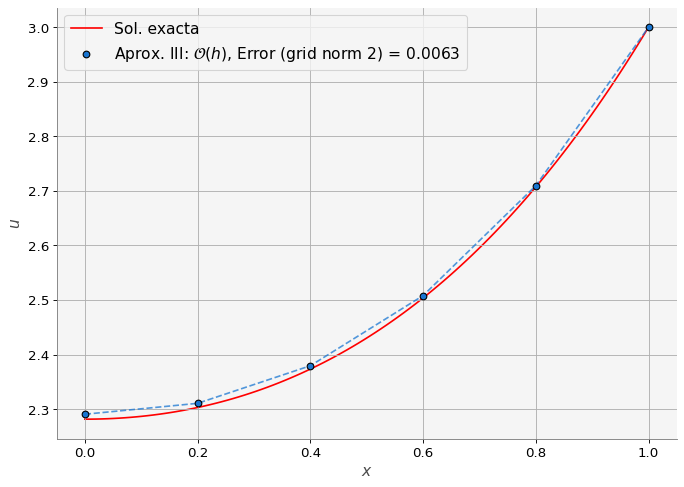
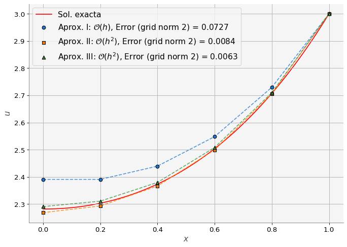
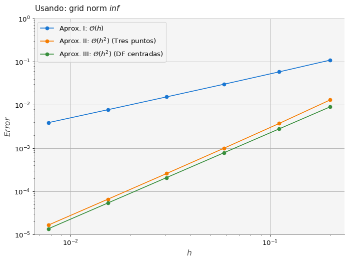

import numpy as np
import matplotlib.pyplot as plt
import macti.visual as mvis
from macti.evaluation import *7 Conducción de calor 1D: condiciones de tipo Neumann
Objetivo.
Resolver numéricamente el siguiente problema usando diferencias finitas.
\[ \begin{eqnarray} -\frac{d^2 u(x)}{d x^2} & = & -e^x \,\,\,\,\, x \in [0,1] \\ \frac{du}{d n}(0) & = & 0 \\ u(1) & = & 3 \end{eqnarray} \]
cuya solución analítica es: $u(x) = e^x - x - e + 4 $
Observa que en este caso se proporciona una condición de tipo Neumann en la frontera izquierda del dominio (\(x=0\)).
MACTI-Analisis_Numerico_01 by Luis M. de la Cruz is licensed under Attribution-ShareAlike 4.0 International


Trabajo realizado con el apoyo del Programa UNAM-DGAPA-PAPIME PE101019, PE101922
quizz = Quizz('q02', 'notebooks', 'local')7.1 Definición de funciones.
def buildMatrix(N, d):
"""
Construye la matriz del sistema.
"""
# Matriz de ceros
A = np.zeros((N,N))
# Primer renglón
A[0,0] = d
A[0,1] = -1
# Renglones interiores
for i in range(1,N-1):
A[i,i] = d
A[i,i+1] = -1
A[i,i-1] = -1
# Último renglón
A[N-1,N-2] = -1
A[N-1,N-1] = d
return A
def solExact(x):
return np.exp(x) - x - np.e + 47.2 Definición de parámetros del problema físico y numérico.
# Parámetros físicos
L = 1.0
f_A = 0.0 # Flujo en A (Neumman)
b_B = 3.0 # Valor de u en B (Dirichlet)
k = 1.0
# Parámetros numéricos
N = 4 # Número de incógnitas
h = L / (N+1)
# Coordenadas de los nodos
x = np.linspace(0, L, N+2)
# Solución exacta en los nodos
sol_e = solExact(x)
# Construcción de la matriz
A = buildMatrix(N+1, 2)
# Lado derecho del sistema
b = np.zeros(N+1)
# Fuente o sumidero
b[1:] = -np.exp(x[1:-1])*h**2
# Condición de frontera en B
b[-1] += b_Bprint(A)
print(b)[[ 2. -1. 0. 0. 0.]
[-1. 2. -1. 0. 0.]
[ 0. -1. 2. -1. 0.]
[ 0. 0. -1. 2. -1.]
[ 0. 0. 0. -1. 2.]]
[ 0. -0.04885611 -0.05967299 -0.07288475 2.91097836]7.3 Ejercicio 1.
Definir lo siguiente:
- La función
Neumann_I(A, b, bcond)que implemente la aproximación I de la presentación “Problemas de Calibración” (página 12). - Llamada a la función
Neumann_I(A, b, bcond)con los parámetros adecuados.
### BEGIN SOLUTION
def Neumann_I(A, b, bcond):
A[0][0] = 1
A[0][1] = -1
A[0][2] = 0
b[0] = bcond
# Corrección de la matriz y el RHS, orden lineal
Neumann_I(A, b, h * f_A)
### END SOLUTION
# Arreglo para almacenar la solución
u1 = np.zeros(N+2)
# Condición de frontera del lado derecho: Dirichlet
u1[-1] = b_B
# Solución del sistema lineal
u1[:N+1] = np.linalg.solve(A,b)
file_answer = FileAnswer()
file_answer.write('1', u1, 'La solución no es correcta, checa tu implementación de Neumann_I().')
print('Solución numérica: {}'.format(u1))El directorio :/home/jovyan/macti/notebooks/.ans/Diferencias_finitas_01/ ya existe
Respuestas y retroalimentación almacenadas.
Solución numérica: [2.39076545 2.39076545 2.43962156 2.54815066 2.72956451 3. ]quizz.eval_numeric('1', u1)----------------------------------------
1 | Tu resultado es correcto.
----------------------------------------7.4 Ejercicio 2.
- Calcular el error de la solución numérica
u1con respecto a la solución exactasol_eusando la definición Grid norm 2 descrita en la “Problemas de Calibración” (página 20).
### BEGIN SOLUTION
# Cálculo del error
e1 = np.sqrt(h) * np.linalg.norm(sol_e - u1, 2)
file_answer.write('2', e1, 'La implementación del error Grid norm 2 parece no ser correcta.')
### END SOLUTION
print('Error: {}'.format(e1))El directorio :/home/jovyan/macti/notebooks/.ans/Diferencias_finitas_01/ ya existe
Respuestas y retroalimentación almacenadas.
Error: 0.07266429782458109quizz.eval_numeric('2', e1)----------------------------------------
2 | Tu resultado es correcto.
----------------------------------------# Graficación de la solución y el error
error_label_1 = 'Error (grid norm {}) = {:0.4f}'.format(2, e1)
plt.figure(figsize=(10,7))
# Graficación de la solución exacta
xsol = np.linspace(0,1,100)
plt.plot(xsol, solExact(xsol),'r-', label='Sol. exacta', zorder=0)
# Graficación de la solución numérica
plt.scatter(x, u1, marker='o', edgecolor='k', zorder=5,
label='Aprox. I: $\mathcal{O}(h)$, ' + error_label_1)
plt.plot(x, u1, '--', lw=1.5, alpha=0.75)
# Decoración de la gráfica
plt.xlabel('$x$')
plt.ylabel('$u$')
plt.legend(loc='upper left', fontsize=14)
plt.grid()
plt.show()
7.5 Ejercicio 3.
Definir lo siguiente:
- La función
Neumann_II(A, b, bcond)que implemente la aproximación II de la presentación “Problemas de Calibración” (página 15). - Llamada a la función
Neumann_II(A, b, bcond)con los parámetros adecuados.
### BEGIN SOLUTION
def Neumann_II(A, b, bcond):
A[0][0] = 3
A[0][1] = -4
A[0][2] = 1
b[0] = bcond
# Corrección de la matriz y el RHS, orden lineal
Neumann_II(A, b, 2 * h * f_A)
### END SOLUTION
# Arreglo para almacenar la solución
u2 = np.zeros(N+2)
# Condición de frontera del lado derecho: Dirichlet
u2[-1] = b_B
# Solución del sistema lineal
u2[:N+1] = np.linalg.solve(A,b)
file_answer.write('3', u2, 'La solución no es correcta, checa tu implementación de Neumann_II().')
file_answer.to_file('q02')
print('Solución numérica: {}'.format(u2))El directorio :/home/jovyan/macti/notebooks/.ans/Diferencias_finitas_01/ ya existe
Respuestas y retroalimentación almacenadas.
Solución numérica: [2.26862518 2.29305323 2.3663374 2.49929455 2.70513646 3. ]quizz.eval_numeric('3', u2)----------------------------------------
3 | Tu resultado es correcto.
----------------------------------------7.6 Ejercicio 4.
- Calcular el error de la solución numérica
u2con respecto a la solución exactasol_eusando la definición Grid norm 2 descrita en la “Problemas de Calibración” (página 20).
### BEGIN SOLUTION
# Cálculo del error
e2 = np.sqrt(h) * np.linalg.norm(sol_e - u2, 2)
file_answer.write('4', e2, 'La implementación del error Grid norm 2 parece no ser correcta.')
### END SOLUTION
file_answer.to_file('q02')
print(e2)El directorio :/home/jovyan/macti/notebooks/.ans/Diferencias_finitas_01/ ya existe
Respuestas y retroalimentación almacenadas.
0.008364723421555469quizz.eval_numeric('4', e2)----------------------------------------
4 | Tu resultado es correcto.
----------------------------------------# Graficación de la solución y el error
error_label_2 = 'Error (grid norm {}) = {:0.4f}'.format(2, e2)
plt.figure(figsize=(10,7))
# Graficación de la solución exacta
plt.plot(xsol, solExact(xsol),'r-', label='Sol. exacta', zorder=0)
# Graficación de la solución numérica
plt.scatter(x, u2, marker='o', edgecolor='k', zorder=5,
label='Aprox. II: $\mathcal{O}(h)$, ' + error_label_2)
plt.plot(x, u2, '--', lw=1.5, alpha=0.75)
# Decoración de la gráfica
plt.xlabel('$x$')
plt.ylabel('$u$')
plt.legend(loc='upper left', fontsize=14)
plt.grid()
plt.show()
7.7 Ejercicio 5.
Definir lo siguiente:
- La función
Neumann_III(A, b, bcond)que implemente la aproximación II de la presentación “Problemas de Calibración” (página 18). - Llamada a la función
Neumann_III(A, b, bcond)con los parámetros adecuados.
### BEGIN SOLUTION
def Neumann_III(A, b, bcond):
A[0][0] = 2
A[0][1] = -2
A[0][2] = 0
b[0] = bcond
# Corrección de la matriz y el RHS, orden lineal
Neumann_III(A, b, -np.exp(x[0]) * h**2 + 2 * h * f_A)
### END SOLUTION
# Arreglo para almacenar la solución
u3 = np.zeros(N+2)
# Condición de frontera del lado derecho: Dirichlet
u3[-1] = b_B
# Solución del sistema lineal
u3[:N+1] = np.linalg.solve(A,b)
file_answer.write('5', u3, 'La solución no es correcta, checa tu implementación de Neumann_III().')
print('Solución numérica: {}'.format(u3))El directorio :/home/jovyan/macti/notebooks/.ans/Diferencias_finitas_01/ ya existe
Respuestas y retroalimentación almacenadas.
Solución numérica: [2.29076545 2.31076545 2.37962156 2.50815066 2.70956451 3. ]quizz.eval_numeric('5', u3)----------------------------------------
5 | Tu resultado es correcto.
----------------------------------------7.8 Ejercicio 6.
- Calcular el error de la solución numérica
u3con respecto a la solución exactasol_eusando la definición Grid norm 2 descrita en la “Problemas de Calibración” (página 20).
### BEGIN SOLUTION
# Cálculo del error
e3 = np.sqrt(h) * np.linalg.norm(sol_e - u3, 2)
file_answer.write('6', e3, 'La implementación del error Grid norm 2 parece no ser correcta.')
### END SOLUTION
print('Error: {}'.format(e3))El directorio :/home/jovyan/macti/notebooks/.ans/Diferencias_finitas_01/ ya existe
Respuestas y retroalimentación almacenadas.
Error: 0.006342955932511579quizz.eval_numeric('6', e3)----------------------------------------
6 | Tu resultado es correcto.
----------------------------------------# Graficación de la solución y el error
error_label_3 = 'Error (grid norm {}) = {:0.4f}'.format(2, e3)
plt.figure(figsize=(10,7))
# Graficación de la solución exacta
plt.plot(xsol, solExact(xsol),'r-', label='Sol. exacta', zorder=0)
# Graficación de la solución numérica
plt.scatter(x, u3, marker='o', edgecolor='k', zorder=5,
label='Aprox. III: $\mathcal{O}(h)$, ' + error_label_3)
plt.plot(x, u3, '--', lw=1.5, alpha=0.75)
# Decoración de la gráfica
plt.xlabel('$x$')
plt.ylabel('$u$')
plt.legend(loc='upper left', fontsize=14)
plt.grid()
plt.show()
7.9 Graficación de las tres aproximaciones.
plt.figure(figsize=(10,7))
xsol = np.linspace(0,1,100)
plt.plot(xsol, solExact(xsol),'r-', label='Sol. exacta', zorder=0)
plt.scatter(x, u1, marker='o', edgecolor='k', zorder=5,
label='Aprox. I: $\mathcal{O}(h)$, ' + error_label_1)
plt.plot(x, u1, '--', lw=1.5, alpha=0.75)
plt.scatter(x, u2, marker='s', edgecolor='k', zorder=5,
label='Aprox. II: $\mathcal{O}(h^2)$, ' + error_label_2)
plt.plot(x, u2, '--', lw=1.5, alpha=0.75)
plt.scatter(x, u3, marker='^', edgecolor='k', zorder=5,
label='Aprox. III: $\mathcal{O}(h^2)$, ' + error_label_3)
plt.plot(x, u3, '--', lw=1.5, alpha=0.75)
plt.xlabel('$x$')
plt.ylabel('$u$')
plt.legend(loc='upper left', fontsize=14)
plt.grid()
plt.show()
7.10 Estudio de refinamiento de malla.
La función meshRefining(...) realiza un estudio de refinamiento de malla para determinar la mejor aproximación de las condiciones de frontera de tipo Neumann.
def meshRefining(fcond, nodos, norma):
"""
Función que permite realizar un estudio de
refinamiento de malla.
Parameters:
-----------
fcondNeumman: function
función que establece la aproximación para la condición
de frontera de tipo Neumman.
nodes: list
Lista de número de nodos que se usarán para el estudio
de refinamiento de malla.
norma:
Define el tipo de grid norm que se usará para calcular el
error con respecto a la solución exacta.
Returns:
--------
e_lista: list
Lista con los errores calculados para los diferentes números
de nodos.
"""
e_lista = []
for N in nodos:
h = L / (N+1)
r = k / h**2
# Coordenadas de los nodos
x = np.linspace(0, L, N+2)
sole = solExact(x)
A = buildMatrix(N+1, 2) # Construcción de la matriz
b = np.zeros(N+1) # Lado derecho del sistema
b[1:] = -np.exp(x[1:-1]) / r # Fuente o sumidero
b[-1] += b_B # Condición de frontera en B
if fcond.__name__ == 'Neumann_I':
bcond = h * f_A
elif fcond.__name__ == 'Neumann_II':
bcond = 2 * h * f_A
elif fcond.__name__ == 'Neumann_III':
bcond = -1/r + 2 * h * f_A
fcond(A, b, bcond) # Corrección de la matriz y el RHS
u = np.zeros(N+2) # Arreglo para almacenar la solución
u[-1] = b_B # Frontera derecha Dirichlet
u[:N+1] = np.linalg.solve(A,b) # Sol. del sist. lineal
e_lista.append(np.linalg.norm(sole - u, norma)) # Cálculo del error
return e_lista7.11 Ejercicio 7.
Usando la función meshRefining(...) realiza un estudio de refinamiento de malla para determinar la mejor aproximación de las condiciones de frontera de tipo Neumann para el problema planteado en esta notebook.
- Definir un arreglo con el número de nodos como sigue: \(nodos = \{2^i | \forall i \in [2,3,\dots8] \}\)
- Calcular las \(h\)´s correspondientes a estos nodos y almacenarlas en el arreglo:
h_lista.
### BEGIN SOLUTION
nodos = [2**i for i in range(2,8)]
h_lista = [L/(n+1) for n in nodos]
file_answer.write('7', h_lista, 'Checa la lista de nodos y el cálculo de las h´s.')
### END SOLUTION
print('Nodos: {}'.format(nodos))
print('h: {}'.format(h_lista))El directorio :/home/jovyan/macti/notebooks/.ans/Diferencias_finitas_01/ ya existe
Respuestas y retroalimentación almacenadas.
Nodos: [4, 8, 16, 32, 64, 128]
h: [0.2, 0.1111111111111111, 0.058823529411764705, 0.030303030303030304, 0.015384615384615385, 0.007751937984496124]quizz.eval_numeric('7', h_lista)----------------------------------------
7 | Tu resultado es correcto.
----------------------------------------7.12 Ejercicio 8.
Usando los arreglos nodos, h_lista, las funciones Neumann_I(), Neumann_II(), Neumann_III() y meshRefining() realiza un estudio de refinamiento de malla para determinar la mejor aproximación de las condiciones de frontera de tipo Neumann para el problema planteado en esta notebook.
### BEGIN SOLUTION
norma = np.inf
e1m = meshRefining(Neumann_I, nodos, norma)
e2m = meshRefining(Neumann_II, nodos, norma)
e3m = meshRefining(Neumann_III, nodos, norma)
file_answer.write('8', e1m, 'La implementación de la llamada a meshRefining() para Neumann_I no es correcta.')
file_answer.write('9', e2m, 'La implementación de la llamada a meshRefining() para Neumann_II no es correcta.')
file_answer.write('10', e3m, 'La implementación de la llamada a meshRefining() para Neumann_III no es correcta.')
### END SOLUTION
print('Errores para Neumann_I: {}'.format(e1m))
print('Errores para Neumann_II: {}'.format(e2m))
print('Errores para Neumann_III: {}'.format(e3m))El directorio :/home/jovyan/macti/notebooks/.ans/Diferencias_finitas_01/ ya existe
Respuestas y retroalimentación almacenadas.
Errores para Neumann_I: [0.10904728226552596, 0.05835083948479003, 0.030195480658391283, 0.01535951849054662, 0.007745922239629444, 0.0038895813335773077]
Errores para Neumann_II: [0.013092993550491094, 0.003733553223093544, 0.000998285860006387, 0.00025816090671559877, 6.564366654870923e-05, 1.6550689755145953e-05]
Errores para Neumann_III: [0.009047282265525869, 0.002795283929234227, 0.0007837159525103665, 0.00020800333903103763, 5.361454732044635e-05, 1.3612341328350652e-05]quizz.eval_numeric('8', e1m)----------------------------------------
8 | Tu resultado es correcto.
----------------------------------------quizz.eval_numeric('9', e2m)----------------------------------------
9 | Tu resultado es correcto.
----------------------------------------quizz.eval_numeric('10', e3m)----------------------------------------
10 | Tu resultado es correcto.
----------------------------------------#
# El siguiente código genera las gráficas usando los resultados anteriores:
#
plt.figure(figsize=(10,7))
plt.plot(h_lista, e1m, 'o-', label='Aprox. I: $\mathcal{O}(h)$')
plt.plot(h_lista, e2m, 'o-', label='Aprox. II: $\mathcal{O}(h^2)$ (Tres puntos)')
plt.plot(h_lista, e3m, 'o-', label='Aprox. III: $\mathcal{O}(h^2)$ (DF centradas)')
plt.yscale('log')
plt.xscale('log')
plt.legend(fontsize=12)
plt.ylim(1e-5,1)
plt.ylabel('$Error$')
plt.xlabel('$h$')
plt.title('Usando: grid norm ${}$'.format(norma))
plt.grid()
plt.show()